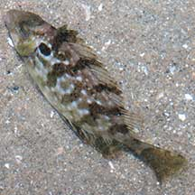
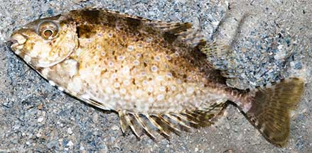
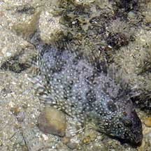
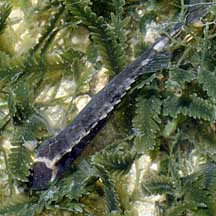

|
|
| fishes text index | photo index |
| Phylum Chordata > Subphylum Vertebrata > fishes > Family Siganidae |
| White-spotted
rabbitfish Siganus canaliculatus Family Siganidae updated Oct 2020 Where seen? This spiny fish is commonly seen on many of our shores, especially among seagrasses, sometimes in groups of a few small individuals. It is also sometimes seen on our Southern shores. Juveniles may school in large numbers, the numbers reducing as the fishes grow bigger. Adults may be found in large groups at spawning time. Features: Can be quite small (about 8cm or less) to quite large (about 15cm). It is named for its rabbit-like snout ('siganus' means 'has a nose like a rabbit') or possibly for its habit of grazing on seaweeds. It is also called Spinefoot after the spines on its pelvic fins, a unique feature of this family. It has tiny scales. Sometimes with a dark round blotch behind the gill cover. Especially young ones, with a white bar across the forehead from eye to eye. Body colours vary with its mood and is generally olive with many prominent white spots all over. When it is scared, it displays a 'fright pattern' that is mottled with pale cream and 6-7 dark diagonal bars. Siganus fuscescens may appear very similar but the body colour generally more uniform, usually lacks or has much fewer spots and the edge of the gill cover is darkly outlined. |
 Dark blotch behind the gill cover. Changi, Jun 09 |
 Kusu Island, May 10 |
|
|
 St. John's Island, May 06 |
 White bar across the forehead from eye to eye. Pulau Sekudu, Jul 09 |
 Juveniles often seen among Sargassum. There are two here, can you spot them? Changi, Apr 07 |
| What does it eat? It eats seaweeeds
and to a much lesser extent, seagrasses. It is active during the day. Human uses: This fish is highly sought after for eating during the Chinese Lunar New Year. At this time, the fishes breed and their roe are particularly relished. Called 'Pei Tor', the Chinese believe it eating it brings good luck. Other species are important foodfishes in other parts of the world. Some of the more colourful reef rabbitfishes are also collected for the aquarium trade. |
| White-spotted rabbitfishes on Singapore shores |
On wildsingapore
flickr
|
| Other sightings on Singapore shores |
Links
|